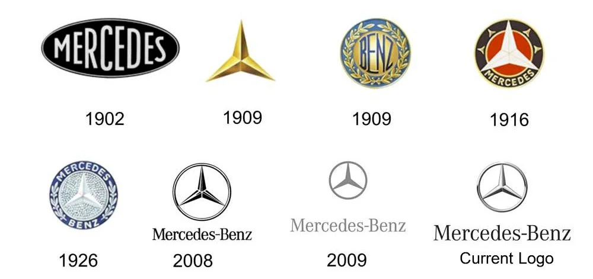

<br>


Inhaltsverzeichnis
1	Begriffsabgrenzungen
2	Fahrzeuge der Marke Mercedes-Benz
3	Geschichte
3.1	Verkauf von Mercedes-Automobilen seit 1901
3.2	Zusammenschluss zur Daimler-Benz AG
3.3	Neuzulassungen von Mercedes-Benz-Pkw im Deutschen Reich von 1933 bis 1938
3.4	Entwicklung des Logos
4	Motorsport
5	Mercedes-Benz-Museum
6	Sonstiges
7	Sponsoring
7.1	Sportteams
7.2	Sportstätten
7.3	Sportveranstaltungen
7.4	Werbebotschafter
8	Literatur
9	Weblinks
10	Einzelnachweise
Begriffsabgrenzungen

Mercedes-Händler in München
Als der Daimler-Benz-Konzern sich diversifizierte, das heißt die Produktions- und Produktbereiche umstellte, wurde das Kerngeschäft am 29. Juni 1989 in die Mercedes-Benz AG überführt, welche die Personenwagen- und Nutzfahrzeugentwicklung und -produktion übernahm.[3] Nach dem Ende des „Integrierten Technologiekonzerns“ wurden Personenwagen- und Nutzfahrzeuggeschäft am 1. April 1997 voneinander getrennt und in verschiedene Geschäftsbereiche aufgeteilt.[4]

Die Marke Mercedes-Benz ist von dem Geschäftsbereich Mercedes-Benz Cars (MBC) zu unterscheiden, der neben der Pkw-Marke Mercedes-Benz auch die Marke Smart führt. Er wurde am 1. November 2019 gemeinsam mit dem Geschäftsbereich Mercedes-Benz Vans in die neu gegründete Mercedes-Benz AG, eine einhundertprozentige Tochtergesellschaft der Mercedes-Benz Group, ausgegliedert. Die Nutzfahrzeuge der Marke Mercedes-Benz gehören neben dem Geschäftsbereich Mercedes-Benz Vans auch zum Geschäftsbereich Daimler Trucks & Buses, der ebenfalls am 1. November 2019 in die Daimler Truck AG ausgegliedert wurde.

Der Name „Daimler“ wird gelegentlich umgangssprachlich für einen Mercedes-Benz verwendet. Zwar ist es der Mercedes-Benz Group AG vertraglich erlaubt, den Markennamen für Produkte zu nutzen[5], dennoch gibt es aber gegenwärtig kein Fahrzeug der Mercedes-Benz Group mit diesem Namen. Für die Geschichte der Namensrechte siehe Daimler Motor Company#Namensrechte.

Fahrzeuge der Marke Mercedes-Benz

Mercedes-Benz-Lastkraftwagen von 1932
Unter der Marke Mercedes-Benz werden nahezu alle Arten von Kraftfahrzeugen vertrieben:

Fahrzeugtyp	Geschäftsbereich der Mercedes Benz Group	Artikel
Pkw	Mercedes-Benz Cars	Mercedes-Benz-Pkw
Vans	Mercedes-Benz Vans
Transporter	Mercedes-Benz-Transporter
Fahrzeugtyp	Geschäftsbereich der Daimler Truck AG	Artikel
Lkw	Daimler Trucks	Mercedes-Benz-Lkw
Nutzfahrzeuge	Mercedes-Benz-Unimog
Busse	Daimler Buses	Mercedes-Benz-Bus
Des Weiteren werden unter der Marke Mercedes-Benz folgende Fahrzeuge auf Basis der oben genannten Modellgruppen angeboten, die zum Teil auch von Fremdunternehmen gefertigt werden:


Mercedes-Benz CL-Klasse mit großem Mercedes-Stern, 2009
Fahrzeugtyp	allgemeiner Artikel
Freizeit- und Reisemobile	Reisemobil
Sonderfahrzeuge	Einsatzfahrzeuge
Sonderschutzfahrzeuge
Taxis
Rettungswagen
Krankentransportwagen
spezielle Nutzfahrzeuge
Darüber hinaus wurden, bis 1991 unter dem Namen MB-Trac, Traktoren produziert.

Die Mercedes-Benz Group produziert mit einer hohen Fertigungstiefe, da sie z. B. Lenk- sowie manuelle und automatische Schaltgetriebe selbst entwickelt und herstellt. Im Motorenbau gibt es eine Vielzahl von Baureihen, die in den verschiedenen Modellgruppen zum Einsatz kommen. So ist es nicht ungewöhnlich, dass der gleiche Motor in PKW, Geländewagen und Transportern eingesetzt wird, siehe Liste der Motoren von Mercedes-Benz.

Geschichte
Verkauf von Mercedes-Automobilen seit 1901

Aktie der Mercedes Company Ltd. vom 23. Juni 1904, einer englischen Verkaufsgesellschaft für Mercedes-Automobile

Mercedes Doppel-Phaeton 28 (1905), in der Cité de l’Automobile
Ursprünglich verkaufte die 1890 gegründete Daimler-Motoren-Gesellschaft (DMG) ihre Fahrzeuge nicht unter dem Namen Mercedes. Die Marke entstand erst um die Jahrhundertwende, inspiriert durch den Geschäftsmann Emil Jellinek, der ab 1898 mit Daimler-Fahrzeugen handelte. Ab 1899 nahm Jellinek unter dem Pseudonym Mercedes (angelehnt an den Namen seiner Tochter Mercédès Jellinek) unter anderem an der Rennwoche von Nizza teil. Obwohl „Mercedes“ zu dieser Zeit nur als Fahrername verwendet wurde und noch nicht als Automobilbezeichnung, wurde der Name so in Zusammenhang mit der DMG bekannt. 1900 vereinbarte Jellinek die Fertigung des neuen, leistungsstarken Motorenmodells „Daimler-Mercedes“, wodurch der Name Mercedes erstmals als Produktbezeichnung genutzt wurde. Zur gleichen Zeit wurde er Vertriebspartner für Daimler-Wagen und -Motoren und orderte 36 Fahrzeuge zum Gesamtpreis von 550.001 Mark (nach heutigem Wert etwa 4,54 Millionen Euro), sowie wenige Wochen später weitere 36 Daimler-Wagen mit 8-PS-Motor.

Nachdem 1901 mehrere dieser Mercedes-Fahrzeuge (der Name wurde nun auch für die Wagen genutzt) erfolgreich bei der Rennwoche von Nizza fuhren, wuchs der Bekanntheitsgrad von Mercedes enorm; im September 1902 wurde der Name „Mercedes“ für die DMG gesetzlich geschützt.[6] Der Mercedes-Stern wurde 1909 als Warenzeichen eingetragen und wird seit 1910 auch als Kühlersymbol verwendet, in den ersten Jahren noch ohne umschließenden Ring.[7]

Zusammenschluss zur Daimler-Benz AG

Mercedes-Benz 300 S Coupé
(1951–1958)

Mercedes-Benz 500 K Special Roadster im Mercedes-Benz-Museum in Stuttgart-Bad Cannstatt
Die Daimler-Motoren-Gesellschaft schloss sich 1926 unter Federführung der Deutschen Bank[8] mit dem Konkurrenten Benz & Cie., deren Motorwagen bereits 1886 unter dem Namen „Benz“ fuhr, zusammen und bildete die Daimler-Benz AG. Daraus ergab sich der neue Markenname Mercedes-Benz, der im gleichen Jahr mit dem Logo Mercedes-Stern geschützt wurde.[9]

In den 1930er Jahren prägten die legendären Silberpfeile im Wettstreit mit der Auto Union das Markenbild. Mercedes-Benz fertigte im PKW-Sektor Modelle der Ober- und Luxusklasse und konnte hier eine Spitzenstellung einnehmen. 1942 wurde die Produktion von Mercedes-Benz-PKW kriegsbedingt eingestellt. In den Nachkriegsjahren wurde die Fertigung von PKW erst 1947 wieder aufgenommen. Schnell erreichte man wieder die früheren Stückzahlen. Auch ermöglicht durch weitere Fertigungsstätten im Ausland wurden die Produkte weltweit erfolgreich. Hier kam besonders dem US-Markt besondere Bedeutung zu, der seit Anfang der 1960er Jahre zu Mercedes-Benz’ größtem Auslandsmarkt wurde. Erst Ende der 1980er Jahre bekam Mercedes-Benz in Europa mit BMW und später Audi sowie auf dem US-Markt mit Lexus ernsthafte Konkurrenz. Trotzdem behauptet sich Mercedes-Benz erfolgreich am Weltmarkt und verzeichnete 2012 und 2013 (mit 1.461.680 verkauften Automobilen) jeweils einen Rekordabsatz.[10] Auch Flugmotoren wurden zeitweise unter dem Markennamen Mercedes-Benz produziert.[11]

Neuzulassungen von Mercedes-Benz-Pkw im Deutschen Reich von 1933 bis 1938
Jahr	Zulassungszahlen[12]
1933	7.844
1934	8.873
1935	11.529
1936	19.816
1937	23.679
1938	20.889
Entwicklung des Logos
[13]

1902
1902
 
1909
1909
 
1916
1916
 
1926
1926
 
1933
1933
 
1997
1997
 
2022
2022
Motorsport
→ Hauptartikel: Mercedes-Benz (Motorsport)
Seit langem ist Mercedes-Benz im Motorsport tätig, darunter auch in der Formel 1. In den 1930er Jahren erzielte Mercedes mit den „Silberpfeilen“ unter Alfred Neubauer große Erfolge. Nach dem Krieg gewann Juan Manuel Fangio 1954 und 1955 die Formel-1-Weltmeisterschaft im Mercedes-Benz W 196.[14]

1955 beendete Daimler-Benz das Engagement im Motorsport zunächst, nachdem es beim 24-Stunden-Rennen von Le Mans zum bis heute schwersten Unfall (84 Tote) in der Automobilrennsportgeschichte kam. Erst 1988 stieg das Unternehmen wieder werksmäßig in den Rennsport ein. In der Formel 1 bildete Mercedes-Benz zusammen mit McLaren ab 1995 das Team McLaren-Mercedes. Die Motoren wurden von Ilmor, respektive dem Mercedes-Tochterunternehmen Mercedes-Benz HighPerformanceEngines hergestellt. In den Jahren 1998 und 1999 wurden Mika Häkkinen und 2008 Lewis Hamilton Formel-1-Weltmeister im McLaren-Mercedes.[15]

Am 16. November 2009 gab die Daimler AG bekannt, dass sie 75,1 % der Teamanteile von Brawn GP übernehme, das im selben Jahr erstmals angetreten war und mit Mercedes-Motoren die Fahrer- und Konstrukteurs-Weltmeisterschaft gewonnen hatte. Der Rennstall tritt seitdem unter dem Namen Mercedes Grand Prix (bis 2011) beziehungsweise Mercedes AMG F1 Team (seit der Saison 2012) als Mercedes-Werksteam unter deutscher Flagge an. Offizieller Sitz des Teams ist die Daimler-Zentrale in Stuttgart. Das Team operierte aber wie sein Vorgänger Brawn GP aus dem englischen Brackley. Im Zuge des Erwerbs von Brawn GP beendete Mercedes-Benz die exklusive Partnerschaft mit der britischen McLaren Group und verkaufte seinen 40-prozentigen Anteil an dieser.

Von 2014 bis 2020 gewann das Team sieben Mal in Folge sowohl die Konstrukteurs- als auch die Fahrerweltmeisterschaft (Lewis Hamilton in den Jahren 2014, 2015 und 2017–2020 sowie Nico Rosberg 2016).

Am Ende der Saison 2018 verließ das Mercedes-Team die DTM nach 18 Jahren.[16]


Mercedes-Benz-Museum
Mercedes-Benz-Museum
Das Mercedes-Benz-Museum in Stuttgart-Bad Cannstatt zeigt historische Fahrzeuge der Marke Mercedes-Benz vom ersten Automobil mit Verbrennungsmotor über die Silberpfeile bis zur Gegenwart. Seit 18. Mai 2006 ist es in einem neuen, modernen Gebäude untergebracht. Gemeinsam mit der Mercedes-Benz-Niederlassung Stuttgart bildet das Museum die Mercedes-Benz Welt.

Sonstiges

Der Silver Star, eine Achterbahn mit dem Thema Mercedes-Benz
Wilhelm Friedle, Betriebsdirektor der Daimler-Benz AG im Werk Sindelfingen von 1927 bis 1935, führte bei Mercedes die Fließbandfertigung ein.
Adolf Hitler ließ sich ab 1931 im Typ 770 fahren, von dem er zwei Exemplare zum Vorzugspreis erhielt. Der zweite Typ 770 (Kennzeichen IIA 19357) wurde mit den Anzeigenkosten im NSDAP-Parteiorgan Völkischer Beobachter verrechnet.[17]
Die Sängerin Janis Joplin und der Poet und Dramaturg Michael McClure schrieben 1970 ein Lied mit dem Titel Mercedes Benz.
2002 wurde der Silver Star im Europa-Park in Rust eröffnet: eine Achterbahn, die „Mercedes-Benz“ als Sponsor zum Thema hat.
Mercedes-Benz Veteranen Club von Deutschland
Seit Februar 2007 kann man die Mercedes C-Klasse in der 3D-Welt Second Life virtuell Probe fahren.
In Bad Aussee (Österreich) gibt es eine Fußgängerbrücke in Form eines Mercedes-Sterns.
Sponsoring
Sportteams
Ab 1972 war Mercedes-Benz Partner und ab 1990 Generalsponsor des Deutschen Fußball-Bunds und dabei Hauptsponsor der deutschen Fußballnationalmannschaft.[18] 2019 wurde der Hersteller von Volkswagen abgelöst.[19]
Seit 2007 ist Mercedes-Benz Exklusiv-Partner des Fußball-Bundesligisten VfB Stuttgart.[20]
Sportstätten
Mehrere Sport- und Eventstätten tragen oder trugen den Namen der Marke. Zwei davon werden von der Anschutz Entertainment Group (AEG) betrieben.

Am 30. Juli 2008 wurde das Gottlieb-Daimler-Stadion im Stuttgarter Neckarpark, an dem die Daimler AG die Namensrechte von 1993 bis 2023 bis zur Umbenennung zur MHPArena[21] hielt,[22] in Mercedes-Benz Arena umbenannt.[23]
Seit 2011 heißt das 2010 fertiggestellte Shanghai World Expo Cultural Center in Shanghai, China ebenfalls Mercedes-Benz Arena.[24]
Im Oktober 2011 wurde bekannt gegeben, dass der 1975 errichtete und 2005 nach dem Hurrikan Katrina renovierte Louisiana Superdome in New Orleans, USA bis 2021 den Namen Mercedes-Benz Superdome tragen wird.[25]
2015 wurde die von der AEG betriebene ehemalige O2 World Berlin in Mercedes-Benz Arena umbenannt.[26]
Das am 26. August 2017 eröffnete, neugebaute Stadion in Atlanta, USA trägt den Namen Mercedes-Benz Stadium.[27]
Sportveranstaltungen
Beim ATP-Turnier in Stuttgart ist Mercedes-Benz seit 1979 Namenssponsor, welches seitdem MercedesCup heißt.[28]
Seit 1991 ist Mercedes-Benz Namenssponsor des Mercedes-Benz Junior Cup.[29]
Werbebotschafter
Seit 2010 warb Franz Beckenbauer als Testimonial für Mercedes-Benz.[30]
2012 wurde bekannt, dass Mercedes-Benz Testimonial-Verträge mit den beiden Nationalspielern Mario Götze und Benedikt Höwedes abgeschlossen hat.[31]
Bundestrainer Joachim Löw und Teammanager Oliver Bierhoff der deutschen Fußballnationalmannschaft hatten ebenfalls Testimonial-Verträge mit Mercedes-Benz.[32]
2013 warben u. a. Willem Dafoe, Usher und Kate Upton für Mercedes-Benz.[33]
Literatur
Jürgen Schlegelmilch: Mercedes-Benz: Ihr guter Stern auf allen Straßen. Vier Jahrzehnte Mercedes-Benz Werbung. Heel, Königswinter 2007, ISBN 978-3-89880-709-8.
Arnd Zschiesche: Ein Positives Vorurteil Deutschland gegenüber – Mercedes-Benz als Gestaltsystem. LIT-Verlag, Berlin 2007, ISBN 978-3-8258-0904-1.
Weitere Literatur siehe auch Artikel Daimler-Benz und Daimler AG
Weblinks
Commons: Mercedes-Benz – Sammlung von Bildern, Videos und Audiodateien
Offizielle Website von Mercedes-Benz
Mercedes-Tests und Fahrberichte bei Auto, Motor und Sport
Einzelnachweise
 Auskunft zur Marke Mercedes-Benz im Register des Deutschen Patent- und Markenamtes (DPMA)
 Mercedes-Benz Group Januar 2023: [1]
 Mercedes-Benz AG gegründet. Daimler AG, abgerufen am 28. November 2019.
 Daimler-Benz AG: Neue Organisationsstruktur. Daimler AG, abgerufen am 28. November 2019.
 Die Marke „Daimler“ vor der Wiederbelebung? Tata denkt über Rolls-Royce-Konkurrenz nach. Handelsblatt.com, 28. Juli 2008, abgerufen am 25. Oktober 2019.
 mercedes-benz-publicarchive.com
 daimler.com
 Von der Interessengemeinschaft zur Daimler-Benz AG. Abgerufen am 17. Oktober 2019.
 Auskunft zur Marke Mercedes Benz Wort-Bildmarke im Register des Deutschen Patent- und Markenamtes (DPMA)
 Mercedes-Benz on record course Mitteilung von Daimler Investor Relations, 20. Januar 2014 (PDF).
 Erster Motorflug der Geschichte mit Daimler-Einzylindermotor vor 125 Jahren. Daimler AG, 7. August 2013, abgerufen am 31. Januar 2020.
 Hans Christoph von Seherr-Thoss: Die deutsche Automobilindustrie. Eine Dokumentation von 1886 bis heute. Deutsche Verlags-Anstalt, Stuttgart 1974, ISBN 3-421-02284-4, S. 328.
 The true story behind the Mercedes-Benz three-pointed star
 Michael Behrndt, Jörg Thomas Födisch, Ulrich Kudrass: Formel 1 Weltmeister seit 1950. Hrsg.: HEEL Verlag GmbH. 2010, ISBN 978-3-86852-304-1.
 Michael Behrndt, Jörg T. Födisch, Ulrich Kudrass: Formel 1 Weltmeister seit 1950. Hrsg.: HEEL.
 Tobias Grüner: Mercedes verlässt DTM nach 2018: DTM-Ausstieg nach 18 Jahren. 24. Juli 2017, abgerufen am 11. Oktober 2020.
 Henning Hinze So brachte das Auto Hitler an die Macht, in Autobild Nr. 2/2014, S. 41.
 DFB-Generalsponsor: VW löst Mercedes ab – W&V. Abgerufen am 15. März 2019.
 DFB-Sponsor: Volkswagen löst Mercedes-Benz ab. 14. Juli 2017, abgerufen am 11. Juli 2021.
 Mercedes-Benz wird Exclusivpartner des VfB Stuttgart. Abgerufen am 15. März 2019.
 Weltmarken-Bündnis für den VfB. VfB Stuttgart, 27. Juni 2023, abgerufen am 27. Juni 2023.
 Neuer Name: Gottlieb-Daimler-Stadion. Abgerufen am 15. März 2019.
 Gottlieb-Daimler-Stadion in "Mercedes-Benz Arena" umbenannt. Abgerufen am 15. März 2019.
 Chinesische Arena verlängert Naming-Right-Deal – Naming Right. Abgerufen am 15. März 2019.
 Namensrechte: Football nun im Mercedes-Benz Superdome. In: StN.de (Stuttgarter Nachrichten). 5. Oktober 2011, abgerufen am 15. März 2019.
 Mercedes-Benz Arena Berlin: Mercedes-Benz und die Anschutz Entertainment Group erweitern ihre Partnerschaft. mercedes-benz-arena-berlin.de, 21. Januar 2015, abgerufen am 20. Oktober 2015.
 Dach und Videowall bereiten Probleme. In: Stadionwelt. (stadionwelt.de [abgerufen am 24. Februar 2018]).
 Philipp Deppe: Das ATP-Turnier in Stuttgart heißt auch in den nächsten drei Jahren MercedesCup. 3. Dezember 2009, abgerufen am 19. April 2012.
 Daimler AG (Hrsg.): Deutsche Teams dominieren den 22. Mercedes-Benz Junior Cup. 2012, abgerufen am 19. April 2012.
 Nach DFB-Elf und Schumi: Mercedes holt Franz Beckenbauer als Testimonial. Abgerufen am 15. März 2019.
 Junge Kicker für kompakte Autos: Mercedes-Benz wechselt Mario Götze und Benedikt Höwedes ein. Abgerufen am 15. März 2019.
 Werben & Verkaufen: Mercedes-Benz bleibt bis 2018 DFB-Sponsor | W&V. Abgerufen am 15. März 2019.
 Scooped – Mercedes Benz 2013 Commercial featuring Willem Dafoe, Kate Upton and Usher. In: superbowl-commercials.org. Archiviert vom Original (nicht mehr online verfügbar) am 20. Februar 2014; abgerufen am 13. März 2014 (englisch).
Ausklappen
Deutsche Pkw-Automobilmarken bis 1918
Ausklappen
Deutsche Pkw-Automobilmarken von 1919 bis 1945
Ausklappen
Deutsche Pkw-Automobilmarken ab 1945
Ausklappen
Deutsche Lkw- und Omnibusmarken
Ausklappen
Mercedes-Benz-Modelle
Ausklappen
Zeitleiste bis 1945
Ausklappen
Zeitleiste seit 1945
Ausklappen
Markennamen der Mercedes-Benz Group
Ausklappen
Markennamen der Daimler Truck AG
Normdaten (Sachbegriff): GND: 4038692-2 (lobid, OGND)
Kategorien: Königlicher Hoflieferant (Belgien)Mercedes-BenzDaimler TruckPkw-Hersteller (Deutschland)Lkw-Hersteller (Deutschland)TraktorenherstellerHybridelektroautoherstellerElektroautoherstellerMarkenname (Automobilindustrie)
Navigationsmenü
Nicht angemeldet
Diskussionsseite
Beiträge
Benutzerkonto erstellen
Anmelden
ArtikelDiskussion
LesenBearbeitenQuelltext bearbeitenVersionsgeschichteSuche
Wikipedia durchsuchen
Hauptseite
Themenportale
Zufälliger Artikel
Mitmachen
Artikel verbessern
Neuen Artikel anlegen
Autorenportal
Hilfe
Letzte Änderungen
Kontakt
Spenden
Werkzeuge
Links auf diese Seite
Änderungen an verlinkten Seiten
Spezialseiten
Permanenter Link
Seiten­­informationen
Artikel zitieren
Kurzlink
QR-Code herunterladen
Wikidata-Datenobjekt
Drucken/​exportieren
Als PDF herunterladen
Druckversion
In anderen Projekten
Commons

In anderen Sprachen
العربية
English
Español
Français
हिन्दी
Nederlands
Русский
اردو
中文
99 weitere
Links bearbeiten
Diese Seite wurde zuletzt am 8. Juli 2024 um 13:46 Uhr bearbeitet.
Abrufstatistik · Autoren
